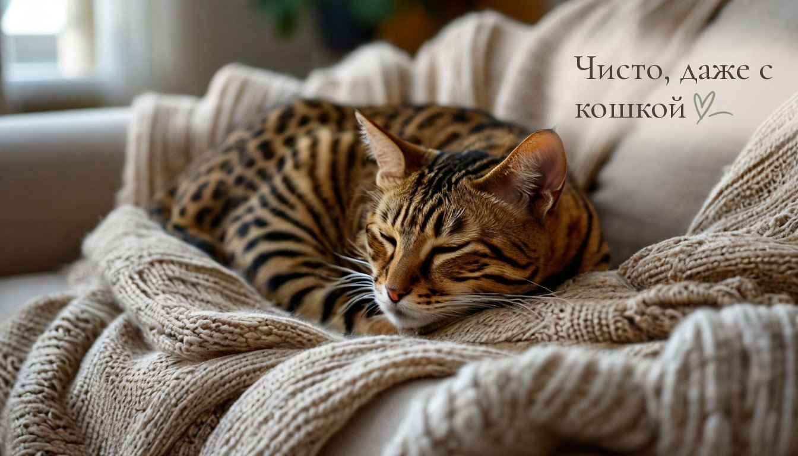
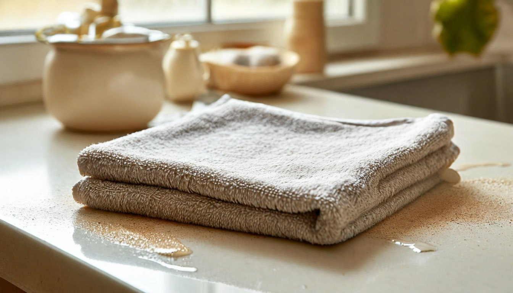
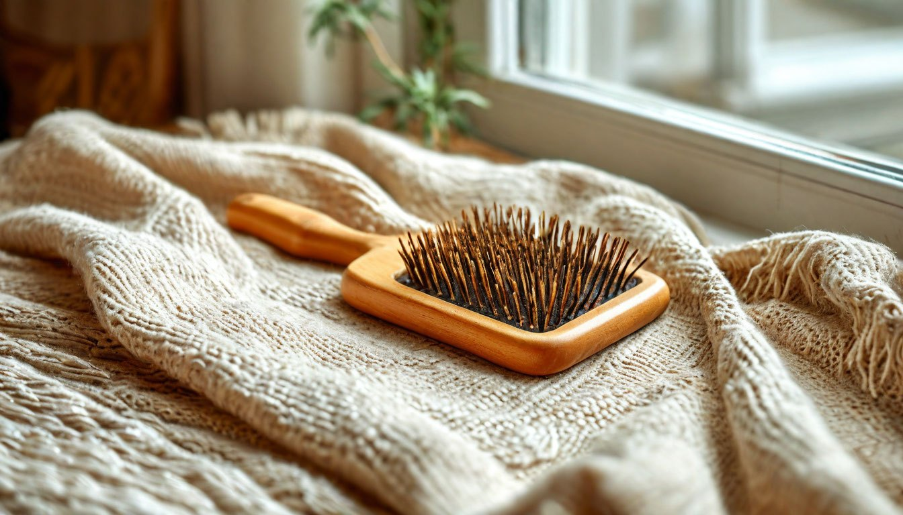

5 привычек, из-за которых шерсть кошки и пыль возвращаются уже на следующий день

Шерсть на диване редко означает, что вы плохо убираете. Чаще уборка сама поднимает шерсть в воздух, и через несколько часов она снова ложится на те же места.
У нас дома бенгальская кошка, ей восемь месяцев. Бенгалы линяют меньше многих пород, но на тёмном пледе каждая шерстинка всё равно видна, а в солнечный день видно и пыль, которая кружится над полом.
Я заметила, что дело не в том, как часто я убираю, а в том, как именно. Вот пять привычек, которые незаметно сводят уборку на нет.
Привычка №1: вытирать пыль сухой тряпкой
Сухая ткань не собирает шерсть и пыль, а сдвигает их и подбрасывает в воздух. Мелкие частицы висят там часами и оседают обратно, иногда на уже чистую полку.
Что делать: протирать поверхности слегка влажной салфеткой из микрофибры, отжатой почти досуха. Складывать её вчетверо и переворачивать на чистую сторону, когда одна сторона становится серой. Так пыль остаётся в ткани, а не в воздухе. Салфетку потом достаточно прополоскать под краном.

Привычка №2: начинать уборку с пола
Кажется логичным сначала пропылесосить, а потом протереть полки. Но всё, что вы стряхнёте со шкафа и подоконника, упадёт на только что чистый пол.
Что делать: убирать сверху вниз. Сначала верхние полки, подоконники и спинка дивана, потом мебель пониже, и только в конце пол. Пылесос включать минут через десять после протирки, когда поднятая пыль успеет осесть.
Привычка №3: вычёсывать кошку, только когда шерсть уже везде
Пока шерсть держится на кошке, её легко собрать щёткой. Когда она уже выпала, она разлетается по всей квартире: на одежду, шторы и под диван.
Что делать: вычёсывать кошку 2–3 раза в неделю по 5 минут, а в сезон линьки весной и осенью хоть каждый день. Удобнее делать это в одном месте, например в ванной, тогда шерсть не разносится по комнатам. Если кошка не любит щётку, можно провести по шерсти слегка влажной резиновой перчаткой: шерсть сама собирается в комочки.

Привычка №4: оставлять любимые места кошки без покрывала
У каждой кошки есть два-три любимых места: угол дивана, кресло, подоконник. Большая часть шерсти собирается именно там и въедается в обивку, откуда её трудно достать даже пылесосом.
Что делать: постелить на эти места плед или покрывало, которое легко снимается и стирается. Стирать его раз в неделю, а перед стиркой хорошо вытряхнуть на балконе или пройтись валиком для одежды, чтобы шерсть не осталась в барабане.
Привычка №5: не следить за влажностью воздуха зимой
С началом отопления воздух в квартире становится очень сухим. Ткани начинают электризоваться и сами притягивают шерсть, а пыль дольше держится в воздухе, потому что ей не на чем осесть.
Что делать: держать влажность около 40–60%. Помогает увлажнитель, а если его нет, проветривание по 10 минут два раза в день и миска с водой у батареи. Небольшой гигрометр показывает, сколько влаги в комнате, и подсказывает, когда пора включать увлажнитель.
От автора
Чистота в доме с животными держится не на генеральных уборках, а на маленьких привычках, которые не дают шерсти и пыли накопиться. Когда порядок действий выстроен, уборка занимает меньше времени, а результата хватает дольше.
Я не всегда успеваю всё сделать идеально: кошка ночью играет и носится по квартире, у нас ещё два хомяка, которые выкидывают опилки из клетки. Шерсть на пледе всё равно будет. Но её стало заметно меньше, и это уже приятно.
Подписывайтесь, чтобы не пропустить следующий разбор: почему мясо получается жёстким, даже если тушить его дольше.
А у вас есть домашние животные, и как вы справляетесь с шерстью?